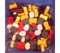

[ Home ] [ Travel ] [ Photography ] [ Pets ] [ Games] [ Rowing] [ Physics ]


Settlers of Catan
Travel
Cruises
Past Cruises (Diaries)
Future Cruises
Rogues Galleries
Land Trips
Diaries (Land Trips)
Hawai'i - Big Island - 04'01
Hawai'i - Maui - 05'02
Hawai'i - Big Island - 04'03
Hawai'i - Kaua'i - 09'04
Hawai'i - Big Island - 04'06
Hawai'i - Maui - 04'06
Mainland China - 05'07
Phoenix, Arizona - 12'07
Greek Isles - 05'08
Hawai'i - Kaua'i - 09'08
Hawai'i - Big Island - 09'09
Hawai'i - Maui - 05'12
Hawai'i - Big Island - 04'13
Ireland - 08'13
Mexico - Cancun 11'13
France/Belgium/Lux 07'15
Hawai'i - Big Island - 05'17
England / Wales - 06'17
Hawai'i - Big Island - 09'19
Photography
Cameras
Underwater
Pets
Tara
Blackie
Whitey
Muffy
Ollie
Rusty
Fluffy
Rufus&Dufus
Games
Rowing
Physics
We first played Catan in early 2007, and it really caught on with us. We now play it at least once a week with the family and occasionally with others. We started with the basic game (Settlers of Catan) and soon added Seafarers of Catan and then Cities & Knights. As well as getting the expansion packs (for 5 to 6 players), we also obtained the Fishermen of Catan and The Great River expansion sets. Recently, we addded the Traders & Barbarians expansion that was released in 2008. In general, we like all of the expansion sets and often play complicated layouts that include many of the features. See the layouts below for further information.
One addition that we aren't sure about is the deck of dice cards. The advantage of using the cards rather than the dice is that the production numbers are statistically distributed - that is, sixes and eights will come up most often, and twos and twelves will come up rarely. This certainly rewards the player who establishes settlements on the high yield numbers. But for some reason, the statistical eccentricities of the dice - where, for example, three may come up more often than eight - adds something to the game that gives everyone hope.
 One annoying thing we found playing Cities & Knights and the
Fishermen of Catan, was continuously having to refer to the instruction
sheets to remember how to rebuild a destroyed city, or to see how many
fish could buy what. So, another modification that I did was to create
a Miscellaneous Costs card that detailed these rules. I printed
these on heavy card stock and attached them to the backs of the regular
Building Costs cards with 2 sided tape. This helped tremendously
as each player now has all of the building requirements right in front
of him. You can click on the building cost card picture to the left in
order to see the card in more detail.
One annoying thing we found playing Cities & Knights and the
Fishermen of Catan, was continuously having to refer to the instruction
sheets to remember how to rebuild a destroyed city, or to see how many
fish could buy what. So, another modification that I did was to create
a Miscellaneous Costs card that detailed these rules. I printed
these on heavy card stock and attached them to the backs of the regular
Building Costs cards with 2 sided tape. This helped tremendously
as each player now has all of the building requirements right in front
of him. You can click on the building cost card picture to the left in
order to see the card in more detail.
 A thought came to me as we were playing with the Fishermen of Catan
variant. It is possible to win (or at least do very well) without ever
building on a fishing ground tile. To give additional encouragement for
building there, I created a Largest Fishing Fleet card, worth 2
Victory Points. This card works like the Harbormaster card. You get one fleet point for
each settlement on a fishing ground (or lake hex), and 2 points for each city
(and 3 for a citadel). The first
player to achieve 3 fleet points gets the Largest Fleet card. If another player
exceeds this, he gets to steal the card. This gives added impetus to
strive for multiple fishing ground (and lake hex) spots.
A thought came to me as we were playing with the Fishermen of Catan
variant. It is possible to win (or at least do very well) without ever
building on a fishing ground tile. To give additional encouragement for
building there, I created a Largest Fishing Fleet card, worth 2
Victory Points. This card works like the Harbormaster card. You get one fleet point for
each settlement on a fishing ground (or lake hex), and 2 points for each city
(and 3 for a citadel). The first
player to achieve 3 fleet points gets the Largest Fleet card. If another player
exceeds this, he gets to steal the card. This gives added impetus to
strive for multiple fishing ground (and lake hex) spots.
 Another change we made for the "big board" game was to create a
new city type, between a city and a metropolis. One of the major annoyances
while playing is that the robber tends to move between two or three "hot
spots". Sometimes your best hex lies in drought because the robber spends
most of his time there. It would be nice if a player could somehow exempt
himself from this fate. Hence, the citadel (click on the citadel piece
for the detailed rules). In a nutshell, a city can be upgraded to a citadel
(one per player) for a cost of 5 resources (one of each flavour). The
citadel is exempt from the Barbarian attack and from the robber, and is
worth three Victory Points.
Another change we made for the "big board" game was to create a
new city type, between a city and a metropolis. One of the major annoyances
while playing is that the robber tends to move between two or three "hot
spots". Sometimes your best hex lies in drought because the robber spends
most of his time there. It would be nice if a player could somehow exempt
himself from this fate. Hence, the citadel (click on the citadel piece
for the detailed rules). In a nutshell, a city can be upgraded to a citadel
(one per player) for a cost of 5 resources (one of each flavour). The
citadel is exempt from the Barbarian attack and from the robber, and is
worth three Victory Points.
 I developed a further enhancement when I found some wooden resource tokens from Mayday Games. I liked the tokens so much I had to find a way to integrate them into the game. The solution I came up with was to have them compliment and act like the existing resource cards, but to make them exempt from the robber and harder to obtain. In other words, they act like resource cards when buying or trading, but they are more valuable as they cannot be stolen by the robber. Click on the token photo to see the rules in detail.
We also have a set of additional house rules that include some new rules, plus some clarification of other rules that seem ambiguous.
The layouts shown below were created using almost only the cards hexes and supplies that came with Settlers, Seafarers and Cities & Knights, and the associated 5-6 player expansion packs. I did cheat a bit and added an extra one of each resource type, and an extra couple of gold field cards. I created the extra cards by using a colour copier and heavy paper stock, and then used double sided tape to attach the newly printed hexes to the 2 (or was it three) hex blanks, and to plain sea hexes (which seemed to be in a surplus quantity). I also created an extra set of the 2-for-1 sea hex ports using the same method.
Special Boards for 5 or 6 Players: (click picture for more details)
 1. Basic Layout - This layout can be used for basic Settlers
of Catan or Cities & Knights. It is not used with Seafarers
of Catan. The resource hexes are arranged in random sequence making
a large land hex, with some desert hexes in the middle. Note that gold field
hexes are used as well. This is a great layout to introduce new players
to Catan, playing the Settlers rules only. It also plays well for
introducing the novice player to Cities & Knights.
1. Basic Layout - This layout can be used for basic Settlers
of Catan or Cities & Knights. It is not used with Seafarers
of Catan. The resource hexes are arranged in random sequence making
a large land hex, with some desert hexes in the middle. Note that gold field
hexes are used as well. This is a great layout to introduce new players
to Catan, playing the Settlers rules only. It also plays well for
introducing the novice player to Cities & Knights.
 2. Depleted Islands - This layout is used with Seafarers
and Cities & Knights. It also optionally uses the special Fishermen
of Catan addon. The islands are called "depleted", because each of the
islands is missing one resource. Only wheat fields are found on every island.
This makes it critical to get a gold hex or a 2-for-1 port, or to split
your settlements over two islands. There are also two "mini" islands to
assist connecting the major islands.
2. Depleted Islands - This layout is used with Seafarers
and Cities & Knights. It also optionally uses the special Fishermen
of Catan addon. The islands are called "depleted", because each of the
islands is missing one resource. Only wheat fields are found on every island.
This makes it critical to get a gold hex or a 2-for-1 port, or to split
your settlements over two islands. There are also two "mini" islands to
assist connecting the major islands.
 3. Two Continents - This layout features two similar continents
separated by 2 sea hexes. In order to encourage sea routes, the first player
to connect the two continents receives 2 VPs, while remaining players receive
1 VP for connecting. Each player only collects for their first connection.
This layout can be played using Seafarers only, but is more fun with Cities
& Knights as well. It is a fairly simple layout, so is good for beginners.
3. Two Continents - This layout features two similar continents
separated by 2 sea hexes. In order to encourage sea routes, the first player
to connect the two continents receives 2 VPs, while remaining players receive
1 VP for connecting. Each player only collects for their first connection.
This layout can be played using Seafarers only, but is more fun with Cities
& Knights as well. It is a fairly simple layout, so is good for beginners.
 4. Monolithic Islands - This layout is the ultimate strategy game.
There are 5 islands, each one having only one resource type. To compensate
for the inevitable surplus of one or two resource types, the gold hexes
and 2-for-1 ports have been strategically placed. Also, the "inter-turn"
building phase has been adjusted to allow "bank trading". These features
help to ease the resource shortages and excesses, but inter-player trading
is also very important in this game. This layout requires Seafarers,
and plays well with Cities & Knights. Not for the timid!
4. Monolithic Islands - This layout is the ultimate strategy game.
There are 5 islands, each one having only one resource type. To compensate
for the inevitable surplus of one or two resource types, the gold hexes
and 2-for-1 ports have been strategically placed. Also, the "inter-turn"
building phase has been adjusted to allow "bank trading". These features
help to ease the resource shortages and excesses, but inter-player trading
is also very important in this game. This layout requires Seafarers,
and plays well with Cities & Knights. Not for the timid!
 5. Climatic / Geological Zones - This layout is the same idea
as Monolithic Islands, but doesn't require Seafarers and is
easier to get multiple resource types. The layout concept is a land mass
that has a mountainous region (with a gold bearing area), a hilly region,
a strip of forest, and then separate areas of fields and pastures. Optionally,
there is a coastline rich in fisheries. In some ways this is more realistic
than the random hex placement in the basic game.
5. Climatic / Geological Zones - This layout is the same idea
as Monolithic Islands, but doesn't require Seafarers and is
easier to get multiple resource types. The layout concept is a land mass
that has a mountainous region (with a gold bearing area), a hilly region,
a strip of forest, and then separate areas of fields and pastures. Optionally,
there is a coastline rich in fisheries. In some ways this is more realistic
than the random hex placement in the basic game.
 6. The Rivers of Catan - This layout contains two major continents,
each with a set of river hexes. Stick close to these hexes and you'll earn
some extra victory points. additional points can be earned by connecting
East and West. Either cross the middle ocean or use the outlying islands
as stepping stones. Note, this layout uses
the new Rivers of Catan from the Traders & Barbarians expansion
pack.
6. The Rivers of Catan - This layout contains two major continents,
each with a set of river hexes. Stick close to these hexes and you'll earn
some extra victory points. additional points can be earned by connecting
East and West. Either cross the middle ocean or use the outlying islands
as stepping stones. Note, this layout uses
the new Rivers of Catan from the Traders & Barbarians expansion
pack.
 7. Treasure Islands - This layout features a resource poor central
starting island surrounded by 4 very rich treasure islands. Players
start on the central island and then attempt to acquire some of the riches
of the islands. Two of the islands are rich in gold fields, while the other
two islands are a fisherman's paradise. The first few rounds will be a struggle
for resources, but once the islands are breached, look out!
7. Treasure Islands - This layout features a resource poor central
starting island surrounded by 4 very rich treasure islands. Players
start on the central island and then attempt to acquire some of the riches
of the islands. Two of the islands are rich in gold fields, while the other
two islands are a fisherman's paradise. The first few rounds will be a struggle
for resources, but once the islands are breached, look out!